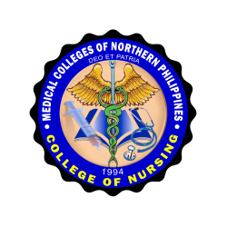

Explore Research by INNOVATES Agenda
Click any INNOVATES agenda pillar below to explore its Utilization Pathway, Standard Procedure, and active Research Utilization case studies.


Ensuring Every Research Protocol Yields Measurable Real-World Benefit
At the MCNP & ISAP Research & Development Center, the life cycle of research does not conclude with defense or publication. Research Utilization represents the systematic translation of academic findings into actionable public policies, healthcare guidelines, technology transfer, instructional improvements, and community extension programs that directly improve quality of life across Region II and Northern Luzon.
Four Pathways of Research Utilization
Every completed faculty or student study is channeled through one or more institutional utilization mechanisms.
1. Policy Translation & Institutional Guidelines
Translating research evidence into formal administrative policies, clinical hospital standard operating procedures (SOPs), municipal ordinances, and departmental protocols for enhanced healthcare delivery and governance.
- ✓ Hospital triage & clinical care manuals
- ✓ Evidence-based local government policy briefs
- ✓ Institutional safety & lab security standards
2. Community Extension & Grassroots Adoption
Partnering with the Community Extension Services Office (CESO) to turn research data into community health seminars, nutritional interventions, anti-crime campaigns, and skills development programs in adopted barangays.
- ✓ Barangay public health monitoring toolkits
- ✓ Community disaster preparedness training
- ✓ Maternal, child health & nutrition outreach
3. Technology Transfer & Commercialization
Facilitating patent applications, utility models, and software copyright registration through the Intellectual Property Office of the Philippines (IPOPHL), alongside commercial incubation with regional industries.
- ✓ Bioactive botanical extracts & formulations
- ✓ Healthcare software & forensic analytics tools
- ✓ Intellectual Property (IP) filing assistance
4. Curricular & Instructional Integration
Embedding empirical research findings and case studies directly into university instructional syllabi, student laboratory manuals, and clinical clerkship rubrics to enrich student learning.
- ✓ Case study modules in Nursing & MedTech
- ✓ Forensic lab exercises in Criminology
- ✓ Data analytics & customs simulations
Standard Procedure for Research Utilization
The institutional path from finalized thesis/faculty paper to validated utilization certification.
Manuscript Completion
Proponent successfully completes oral defense, adheres to IERC ethics requirements, and submits hardbound copies to the RDC Repository.
Policy Synthesis & Toolkit
With RDC guidance, authors extract actionable findings into a concise 2-page Policy Brief, instructional module, or community guide.
Stakeholder Handover
Formal turnover of research outputs to partner institutions, hospitals, LGUs, or schools through a Memorandum of Agreement (MoA).
Utilization Certification
Partner agency confirms practical adoption; RDC audits evidence and grants the official Certificate of Research Utilization.
MCNP Research Utilization & Clinical Impact
Verified hospital protocols, clinical diagnostic tools, and community health translations across Cagayan Valley.

COLLEGE OF NURSING VALUE
Hospital Adopted
Pediatric Medication Error-Mitigation Protocol
Dual-signoff digital dosage verification and syringe barcode checks, lowering pediatric inpatient dosing variances by 41% during clinical handovers.
NAVIGATE
Diagnostic Adopted
Low-Dose CT (LDCT) Shielding & Exposure Calibration Protocol
Customized bismuth and lead apron shielding routines reducing pediatric and geriatric gonadal radiation absorption by 22% while preserving high-contrast diagnostic clarity.
VALUE
RHU Adopted
Multiplex Waterborne Enteric Pathogen Screening Protocol
Field-deployable colorimetric screening assay detecting coliform bacteria and giardia cysts in rural wellsprings within 4 hours following river basin flood surges.
OPERATIONALIZE
LGU Adopted
Ergonomic Musculoskeletal Rehabilitation for Agrarian Workers
Field postural rehabilitation and biomechanical stretch regimens preventing chronic lumbar and degenerative joint strains in corn and tobacco harvesters.
ADVANCE
Community Adopted
Standardized Antimicrobial Botanical Ointment Formulation
Standardized extraction and pharmaceutical compounding monograph for native Akapulko and Guava leaf extracts, formulated into sterile antiseptic salves.
ISAP Research Utilization & Policy Impact
Verified law enforcement models, customs trade matrices, community ICT solutions, and social policy briefs.
NURTURE
Police Adopted
GIS-Based Night Patrol Geospatial Mapping
Crime hotspot cluster analysis and tactical patrol routing algorithms adopted by municipal police stations, improving tactical arrival time by 35%.
STRENGTHEN
Port Adopted
Electronic Harmonized Tariff Classification Decision-Matrix
Algorithmic valuation and commodity categorization matrix for imported agricultural goods, cutting customs clearance discrepancy disputes by 60%.
NAVIGATE
MDRRMO Adopted
Cloud Disaster Evacuation & Relief Logistics Dispatch System
Offline-capable web portal providing real-time headcount verification, flood telemetry monitoring, and ration dispatch tracking in typhoon centers.
INSPIRE
DepEd Adopted
Remedial Reading & Physical Fitness Multigrade Toolkits
Culturally grounded contextual learning materials and gamified motor skill routines bridging fundamental reading and health deficits in rural elementary learners.
TRANSFORM
BJMP / DSWD Adopted
Trauma-Informed Restorative Justice & Youth Rehabilitation
Structured community reintegration sessions and cognitive-behavioral toolkits designed for Children in Conflict with the Law (CICL) to lower recidivism.
STRENGTHEN
DOT / LGU Adopted
Micro-Enterprise Digital Bookkeeping & Agro-Tourism Protocols
Simplified spreadsheet cash-flow ledgers and farm-to-table hygiene manuals empowering community cooperatives and homestay operators in tourist enclaves.
Ready to Apply for a Certificate of Research Utilization?
Faculty researchers, graduates, and institutional partners whose research outputs have been adopted or integrated into practice may request formal verification and documentation through the RDC Secretariat.